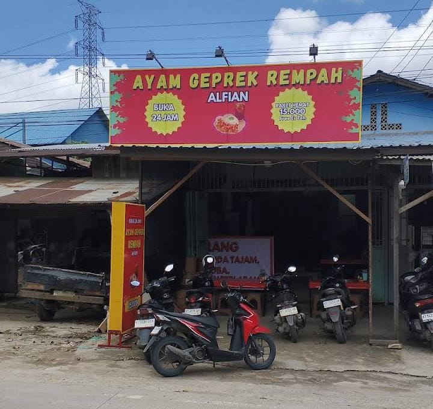
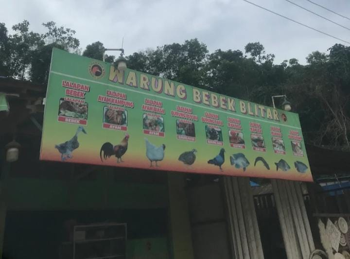

Rekomendasi Tempat Makan
Yuk, kenali tempat makan pilihan yang ada di Samarinda!

AYAM GEPREK REMPAH
Menu andalan: Nasi Geprek Ayam Rempah
Alamat: Jl. KH.Harun Nafsi
RASAKAN KELEZATAN AYAM GEPREK REMPAH
📍 Lihat Lokasi
WARUNG BEBEK BLITAR
Menu andalan: Nasi Ayam Ganje
Alamat: Jl. H. A. M. M. Rifaddin
Warung bebek Blitar
📍 Lihat LokasiNAMA WARUNG MAKAN 3
Menu andalan: ISI MENU ANDALAN DI SINI
Alamat: ISI ALAMAT WARUNG DI SINI
ISI DESKRIPSI SINGKAT WARUNG DI SINI
📍 Lihat Lokasi